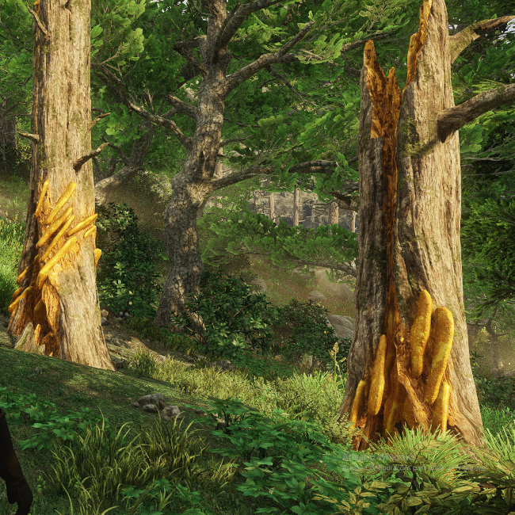

Abelhas são as produtoras de mel e cera que podem ser encontradas em regiões montanhosas
Geralmente quando não tem suas colmeias destruídas por ursos, ou seu mel pego por nós,
as colmeias podem atingir tamanhos formidáveis, como no caso da árvore á esquerda acima.
Seu mel é utilizado em várias receitas, como bolos e tortas, e até em receitas agridoces.